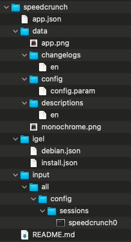

HOWTO Add Applications
OS 12 App Portal
- With IGEL OS 12, the modular principle is introduced – you can install and update single applications like Citrix or AVD client, Chromium browser, etc. individually. All applications currently available for IGEL OS 12 can be found in the IGEL App Portal.
OS 12 App SDK
-
With SDK ≥1.0.0 and IGEL OS ≥ 12.5.0 it is no longer necessary to use a special Developer Edition of IGEL OS.
-
To develop and evaluate apps, it is now sufficient to copy the two public SDK app signing keys to the IGEL OS:
- copy
/usr/share/igelpkg/certs/IGEL_OS_12_SDK-intermediate.crtfrom development machine to/wfs/cmty/im-certs/on IGEL OS - deploy
/usr/share/igelpkg/certs/IGEL_OS_12_SDK-leaf.crtas app signing certificate by UMS - reboot
- copy
-
SDK command to build and sign app:
1 | |
IGEL App Creator Portal
Build your own IGEL OS App with IGEL App Creator Portal
- IGEL App Creator Portal – the straightforward way to secure and deploy your third-party apps to IGEL OS12
- IGEL KB: IGEL App Creator Portal
- IGEL KB: Upload and Assign Files in the IGEL UMS Web App - Classification - App signing certificate
- IGEL KB: How to Make Devices Download from App Portal when UMS is Configured as the App Proxy as the Global Setting
- IGEL Community GitHub: IGEL OS APP RECIPES
- IGEL Community GitHub: SpeedCrunch
- IGEL Community GitHub: How to find and build a screen magnifier (KMag) app
Please Note:
- The IGEL App Creator portal runs the IGEL SDK to create and sign your application for OS12
- For security requirements, the IGEL App Creator Portal only allows for debian and ubuntu official repository URLs. Use the file upload feature to add file.
- For OS 12.5.0+, may need to have the app
Compatibility layer for 12.0.x appsinstalled - UMS Web App - Apps Settings:
Download from UMSand do not setBlock devices from downloading apps from the public App Portal as a fallback optionunless there is no internet access from OS 12 devices - Using the UMS update proxy and distributing OS 12 apps through ICG is not supported. As an alternative, you can use a reverse proxy between IGEL OS devices and UMS. For more information, see IGEL KB: IGEL Universal Management Suite Network Configuration and IGEL KB: Configure the UMS to Integrate Reverse Proxy with SSL Offloading.
Do you have a UD Pocket with IGEL OS 12 from Disrupt?
Want to test out OS 12 with App Portal without UMS12?
Video show steps to add applications to OS 12 without UMS12
Here are some steps to try out
Steps to test out your UDPocket or OS 12 installed device
- Boot device
- Skip -- Let's connect to the company network
- Skip -- Use the one-time password to onboard this device?
- Obtain IGEL OS 12 Evaluation License -- Are you implementing as IGEL solution for your company? (This is 90 a day evaluation license)
- Reboot
- Open the App Portal and install applications
Optional - Use igelpkgctl command line
-
Open a Terminal Window as root (add terminal session from setup)
-
List packages to install:
1 | |
- Update to latest version of IGEL OS
1 | |
- Install lastest AVD client:
1 | |
-
Open Setup to add a AVD session: Ctrl+Alt+S
-
Install lastest Chromium client:
1 | |
-
Open Setup to add a Chromium session: Ctrl+Alt+S
-
Create comma separated list of installed applications :
1 | |
1 | |
1 | |
- Uninstall AVD:
1 | |
Optional - How to reset a device
Run the following command as root in terminal window:
- OS 12:
1 | |
- OS 11:
1 | |
Steps to connect an OS 12 device to sandbox UMS
Steps to test out your UDPocket or OS 12 installed device with a sandbox UMS
- Boot device
- Skip -- Let's connect to the company network
- Use the one-time password to onboard this device?
- URL / Server address:
73.242.149.67 - Port:
8443 - One-time password:
TRY-IGEL - Communication token:
94ad777f5b5894a7
- URL / Server address:
IGEL KB: Alternative Onboarding Method: Registering Devices with the UMS Using the One-Time Password
Building an OS 12 App Recipe for IGEL App Creator Portal -- SpeedCrunch

app.json
1 2 3 4 5 6 7 8 9 10 11 12 13 14 15 16 17 18 | |
data/app.png
Application icon color
data/changelogs/en
1 2 3 4 5 6 7 8 9 10 11 12 13 14 15 16 17 18 19 20 21 22 23 24 25 26 27 28 29 30 31 32 33 34 35 36 37 38 39 40 41 | |
data/config/config.param
1 2 3 4 5 6 7 8 9 10 11 12 13 14 | |
data/descriptions/en
1 2 3 | |
data/monochrome.png
Application icon monochrome
igel/debian.json
1 2 3 4 5 | |
igel/install.json
1 2 3 4 5 6 7 8 9 10 11 | |
input/all/config/sessions/speedcrunch0
1 2 3 | |
README.md
1 | |
OS 11 and OS 12 Via Custom Partitions
IGEL Community on GitHub - Custom Partitions
Sample OS 11 Profiles to test some of the most common Custom Partitions created by the automated builder scripts on GitHub link above.
| Application | Profile |
|---|---|
| Chrome | LINK to Profile |
| Frame | LINK to Profile |
| LibreOffice | LINK to Profile |
| Microsoft Edge | LINK to Profile |
| VLC | LINK to Profile |
| Webex | LINK to Profile |
| Zoom | LINK to Profile |
OS 12 Profile Settings
| Application | Size | URL | Initial action | Final Action | Icon | Command |
|---|---|---|---|---|---|---|
| Chrome | 600M | https://[UMS_Server]:8443/ums_filetransfer/chrome.inf | /custom/chrome-cp-init-script.sh init | /custom/chrome-cp-init-script.sh stop | /custom/chrome/opt/google/chrome/product_logo_256.png | /custom/chrome/usr/bin/google-chrome-stable |
| Frame | 500M | https://[UMS_Server]:8443/ums_filetransfer/frame.inf | /custom/frame-cp-init-script.sh init | /custom/frame-cp-init-script.sh stop | /custom/frame/usr/share/pixmaps/Frame.png | /custom/frame/usr/bin/nutanix-frame/Frame –url=console.nutanix.com |
| LibreOffice | 1500M | https://[UMS_Server]:8443/ums_filetransfer/libreoffice.inf | /custom/libreoffice-cp-init-script.sh init | /custom/libreoffice-cp-init-script.sh stop | /custom/libreoffice/usr/share/icons/hicolor/256x256/apps/libreoffice7.5-main.png | /custom/libreoffice/opt/libreoffice7.5/program/soffice |
| Microsoft Edge | 800M | https://[UMS_Server]:8443/ums_filetransfer/edge.inf | /custom/edge-cp-init-script.sh init | /custom/edge-cp-init-script.sh stop | /custom/edge/opt/microsoft/msedge-beta/product_logo_256_beta.png | /custom/edge/usr/bin/microsoft-edge-beta |
| VLC | 300M | https://[UMS_Server]:8443/ums_filetransfer/vlc.inf | /custom/vlc-cp-init-script.sh init | /custom/vlc-cp-init-script.sh stop | /custom/vlc/usr/share/icons/hicolor/256x256/apps/vlc.png | /custom/vlc/usr/bin/vlc |
| Webex | 1100M | https://[UMS_Server]:8443/ums_filetransfer/webex.inf | /custom/webex-cp-init-script.sh init | /custom/webex-cp-init-script.sh stop | /custom/webex/opt/Webex/bin/sparklogosmall.png | /custom/webex/opt/Webex/bin/CiscoCollabHost |
| Zoom | 800M | https://[UMS_Server]:8443/ums_filetransfer/zoom.inf | /custom/zoom-cp-init-script.sh init | /custom/zoom-cp-init-script.sh stop | /custom/zoom/usr/share/pixmaps/Zoom.png | xdg-mime default Zoom.desktop x-scheme-handler/zoommtg && /custom/zoom/usr/bin/zoom |
IGEL Disclaimer
The provided packages for use with the IGEL OS Custom Partition feature are without any warranty or support by IGEL Technology.
The files are not designed for production usage, use at your own risk. IGEL Technology will not provide any packages for production use and will not create or support any other packages or the implementation for other 3rd party software.
IGEL Technology is not responsible for any license violation created with the custom partition technology or the provided technical demonstation packages.
The custom partition technology can create a permanent damage in the IGEL OS host system, services related to the wrong usage/misinstallation of a custom partition and/or the deployed packages are not covered by the warranty in any kind.
You will not get support as long the custom partition is used on a system, to avoid conflicts you've to reset the device back to factory defaults before opening a support call.
All packages are designed as technical demonstration samples!
Use at your own risk!
GitHub Custom Partition Builders - Where the Magic Happens
The GitHub site for Custom Partitions (CP) uses build script to automate the creation of a CP.
There are videos in the link above showing steps to create a CP. In summary the steps are:
- Create Ubuntu VM (18.04 for pre OS 11.09, 22.04 for OS 11.09+/10+, and 20.04 for OS 12)
- Get the builder script from GitHub and run it on the VM
- Copy the CP to UMS / File server (importing,
.inf,.tar.bz2,.xml) - Update the UMS CP profile for file server name and file location
- Assign profile to devices
NOTE: As of 5 May, 2024 IGEL OS pre 11.09 uses Ubuntu 18.04 libraries, OS 11.09+/10+ users Ubuntu 22.04 libraries, and IGEL OS 12 uses Ubuntu 20.04 libraries. To check the OS version:
1 | |
Debugging Custom Partition
- Q: What log should be checked for failed CP deployment?
- A: Here is command to find custom:
1 | |
VLC Media Player - Build Script
The VLC Media Player CP can build a CP for either OS 11 or OS 12.
Let us take a look at the build script build-vlc-cp.sh
-
Lines: 2-3
set -xwill show each line as executed.trap read debugwill single step the script and will require Enter key pressed to move to next line. Remove the#for debugging script. -
Lines: 7-19 Variables used in the script.
Lines: 18-19are the dependent libraries and were obtained by starting an install ofVLC.gdebican be used for finding dependencies on a.debfile. -
Lines: 60-74 VLC has many dependencies that may or may not be included in IGEL OS 11 or 12. The builder adds all the dependencies and this section of the script prunes out any dependencies that are in the target OS version as defined by
OS11_CLEANorOS12_CLEAN. Additional details can be found GitHub Usr Clean
1 2 3 4 5 6 7 8 9 10 11 12 13 14 15 16 17 18 19 20 21 22 23 24 25 26 27 28 29 30 31 32 33 34 35 36 37 38 39 40 41 42 43 44 45 46 47 48 49 50 51 52 53 54 55 56 57 58 59 60 61 62 63 64 65 66 67 68 69 70 71 72 73 74 75 76 77 78 79 80 81 82 83 84 85 86 87 88 89 90 91 92 93 94 95 96 97 98 99 100 101 102 103 104 105 106 107 108 109 110 111 112 | |
VLC Media Player - CP init script
The CP init script runs after the CP files are deployed and before the CP files are removed. Many applications expect to be installed in predefined folders. The init script can be used to link the CP into the file system.
Let us take a look at the init script vlc-cp-init-script.sh
-
Lines: 27-36 Link the files in the CP to the IGEL OS file system.
-
Lines: 48-52 Associate VLC for media file types.
-
Lines: 57-62 Unlink the files in the CP from the IGEL OS file system.
1 2 3 4 5 6 7 8 9 10 11 12 13 14 15 16 17 18 19 20 21 22 23 24 25 26 27 28 29 30 31 32 33 34 35 36 37 38 39 40 41 42 43 44 45 46 47 48 49 50 51 52 53 54 55 56 57 58 59 60 61 62 63 64 65 66 67 68 69 | |
GitHub Custom Partition Builders - Automation
Q: How to keep applications up to date?